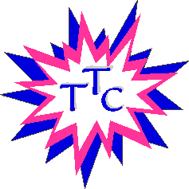

The Teachers Technology Collaborative is a group of present and former Agassiz teachers
who are committed to using technology to teach students to think critically and creatively.
We design and implement technology based thematic units integrating social
studies, reading, language arts and science. We share curriculum and ideas
while seeking to continually improve our understanding of the role of technology in education.

Teachers Technology Collaborative Members
1996 Officers
President / Founder - Rosalyn Richards
Vice President - Alvin Cooper
Secretary - Sandra Hutson
Treasurer - Barbara Boisvert
Curriculum:
Barbara Corey - Sarah Greenwood School
Grace Donahue - Agassiz School
Brenda Fergus - Agassiz School
Maria Harvey - Agassiz School
Trudy Lowery - Agassiz School
Candida Mundo - Agassiz School
Susan Switalski - Agassiz School
Judy Weisenberger - Dever School
Alfredo Nuñez - Principal Agassiz School